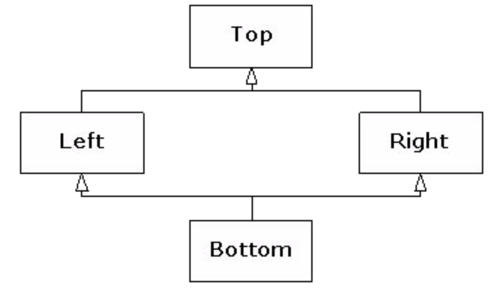
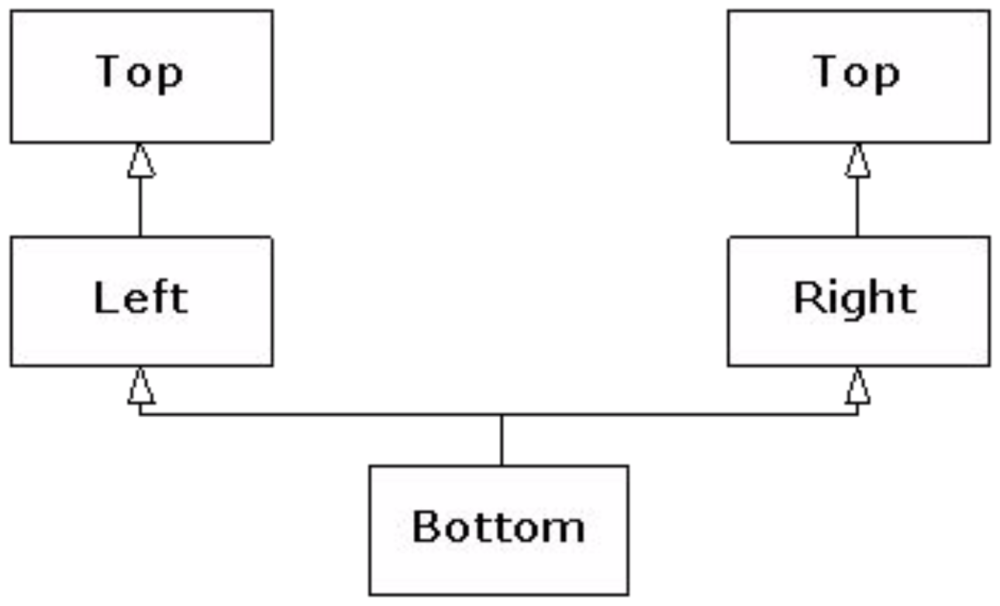
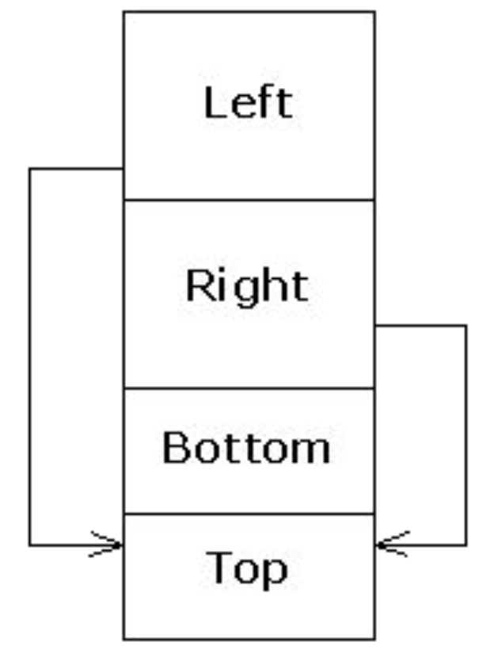

Inheritance
Inheritance Basics
OOP provides a dimension of abstraction known as
inheritance. Inheritance is the process by which a new class, known as the
derived class or
child class or
descendent class (can be used for child of child of etc.), is created from another class, known as the
base class or
parent class or
ancestor class (can be used for parent of parent of etc.). The derived class has all the member vars and all ordinary member functions that the base class has. In the derived class, we only include the declaration of an inherited member function if you want to change its definition. To have a derived class inherit from a base class we add a colon followed by the name of the base class in the derived class' definition:
class derivedClass : public baseClass {
// want to change definition of inherited member function
void inheritedFn();
}
Properties of Derived Classes
- derived classes can add new member vars and functions
- derived classes are objects of the base class (but not vice versa). We can assign an object of the derived class to one of the base class, but we introduce the slicing problem (more on this here).
- derived classes do not have access to private vars or functions from the base class
"Is a" vs "Has a" Relationship
- "Is a" - inheritance (e.g. a boy "is a" human)
- "Has a" - class contains objects of another class as member data (e.g. a boy "has a" toy)
Inherited Members
The derived class has all the member vars and all ordinary member functions of base class. The inherited member functions and member variables are not mentioned in the declaration of the derived class, but are automatically members of the derived class, except for the following:
- constructors
- destructors
- copy constructors
- assignment operator
- private member functions
Redefinition of Inherited Functions
If we want to change the definition of an inherited member function, we declare it in the definition of the derived class (called
redefining). However, if the descendent class wants to use the base class function, we use the scope resolution operator with the name of the base class, i.e.
derivedClass.baseClass::function();
Assignment Operators And Copy Constructors
Overloaded assignment operators and copy constructors are not inherited, but they should be included in the derived class. The base class' assignment operators and copy constructors can be used in the derived classes with the scope resolution operator.
Derived& Derived::operator =(const Derived& rightSide) {
Base::operator =(rightSide);
}
Notice that we first invoke the base class assignment operator. We would then set the new variables of the derived class.
Constructors
Constructors are not inherited, but can invoke a constructor of base class within the definition of a derived class constructor. Constructors for derived classes begin with an invocation of a constructor for the base class which initializes all the data inherited from the base class. By default, the base class' default constructor is invoked if no explicit base constructor is called. An example of how a base class constructor can be invoked is:
HourlyEmployee::HourlyEmployee (const string& name, const string& id,
double rate, double hours)
: Employee(name, id), wagerate(rate), hours(hours){}
Destructors
Destructors for derived classes automatically invoke the destructor of the base class, but it has to delete additional member variables it has defined. The order that the destructors are called is the
opposite of how constructors are called: if class C derives from class B which derives from class A, if an object of class C goes out of scope, C -> B -> A destructors are called in that order.
Protected Qualifier
The
protected qualifier allows variables and functions to be accessed by name in a derived class but not anywhere else. Protected members are inherited in the derived class as if they were marked protected in the derived class. e.g.
protected int a;
Protected And Private Inheritance
The kind of inheritance we have mentioned up till now are forms of
public inheritance. The scope of the variables do not change as they are inherited (public and protected members are inherited as such, private members are not inherited). There are also
protected and
private inheritance which are defined as such in the derived class' definition.
-
Protected inheritance - members that are public in the base class are protected in the derived class when they are inherited.
e.g. class SalariedEmployee: protected Employee {};
-
Private inheritance - all members of the base class are inaccessible in the derived class.
e.g. class SalariedEmployee: private Employee {};
- Note: Private and protected inheritance restricts access to inherited members when used by a derived class object, but the derived class still contains all base class data
Multiple Inheritance
A derived class can have more than one base class. We specify the base classes by separating them with commas. i.e.
class derivedMulti : public base1, base2 {}
Interface Inheritance
In C++, all inheritance is
implementation inheritance because everything in the base class, both interface and implementation, becomes part of the derived class. To
simulate interface inheritance in C++, we derive from an
interface class, which is a pure abstract class that contains only declarations (no data or function bodies). These declarations will be pure virtual functions, except for the destructor.
// Interface Classes
class Printable {
public:
virtual ~Printable() {}
virtual void print(ostream&) const = 0;
};
class Intable {
public:
virtual ~Intable() {}
virtualint toInt() const = 0;
};
class Stringable {
public:
virtual ~Stringable() {}
virtual string toString() const = 0;
};
// Interface Inheritance
class Able : public Printable, public Intable, public Stringable {
int myData;
public:
Able(int x) { myData = x; }
void print(ostream& os) const { os << myData; }
int toInt() const { return myData; }
string toString() const {
ostringstream os;
os << myData;
return os.str();
}
};
void testPrintable(const Printable& p) {
p.print(cout);
cout << endl;
}
void testIntable(const Intable& n) {
cout << n.toInt() + 1 << endl;
}
void testStringable(const Stringable& s) {
cout << s.toString() + "th" << endl;
}
int main() {
Able a(7);
testPrintable(a); // 7
testIntable(a); // 8
testStringable(a); // 7th
}
Common Function Names
Consider the following example:
class A { void foo(); };
class B { void foo(); };
class C : public A, public B {};
int main() {
C c;
c.foo(); // ERROR
}
The object
c has 2 possible function
foo() to choose from, class
A's or class
B's. Since the compiler does not know which one to call, it throws an error. To clarify which function we are calling, we qualify the function call with the corresponding base class' name. e.g.
class C : public A, public B {
public:
using A::foo();
}
int main() {
C c;
c.foo(); // Calls A::foo()
}
Another way is to use
dominance.
Duplicate Subobjects
When a base class is inherited, a copy of all data members of that base class is copied over to the derived class. Note the following example:
class A { int x; };
class B { int y; };
class C : public A, public B { int z; };
int main() {
cout << "sizeof(A) == " << sizeof(A) << endl;
cout << "sizeof(B) == " << sizeof(B) << endl;
cout << "sizeof(C) == " << sizeof(C) << endl;
C c;
cout << "&c == " << &c << endl;
A* ap = &c;
B* bp = &c;
cout << "ap == " << static_cast(ap) << endl;
cout << "bp == " << static_cast(bp) << endl;
C* cp = static_cast(bp);
cout << "cp == " << static_cast(cp) << endl;
cout << "bp == cp? " << boolalpha << (bp == cp) << endl;
}
/* Output:
sizeof(A) == 4
sizeof(B) == 4
sizeof(C) == 12
&c == 1245052
ap == 1245052
bp == 1245056
cp == 1245052
bp == cp? true
*/
We note that the address of
ap is the same as
&c, while
bp is offset by 4 bytes. This indicates that the object
c begins with its
A subobject, then the
B subobject, and finally the data from the
C type.
When upcasting from
C to
A, the resulting pointer points to the
A portion which is at the beginning of the
C object, and thus has the same address.
When upcasting to
B, however, the resulting pointer points to the
B subobject, which is shift 4 bytes up because the
A subobject takes up 4 bytes (int).
When casting back from
B to
C, since the original object was a
C type, the pointer is shifted back to the original address of the complete
C object.
When comparing
bp == cp,
cp is implicitly converted to a
B* since upcasting is always allowed (vs. downcasting), thus the result was true.
Diamond Inheritance

If you have multiple base classes and those base classes have a common base class, you will have 2 copies of the original base class. The inheritance diagram, therefore, looks more like:

class Top {
int x;
public:
Top(int n) { x = n; }
};
class Left : public Top {
int y;
public:
Left(int m, int n) : Top(m) { y = n; }
};
class Right : public Top {
int z;
public:
Right(int m, int n) : Top(m) { z = n; }
};
class Bottom : public Left, public Right {
int w;
public:
Bottom(int i, int j, int k, int m) : Left(i, k), Right(j, k) { w = m; }
};
int main() {
Bottom b(1, 2, 3, 4);
/*
Top (Left): x = 1
Top (Right): x = 2
Left: y = 3
Right: z = 3
Bottom: w = 4
*/
cout << sizeof b << endl; // 20 (5 * int)
}
This design is awkward because the user thinks that only 4 integers are required, but which are the 2 arguments that should be passed into
Left and
Right? This also presents a problem if we try to convert a
Bottom pointer to a
Top pointer. But as shown
earlier, the address may be readjusted and will be different depending on which of the 2
Top subobject is chosen. Since this upcast is ambiguous, the compiler does not allow it. Another consequence is that the
Bottom object would not be able to call a function defined in
Top.
Virtual Base Class
In a true diamond inheritance, the
Top object is shared by both the
Left and
Right subobjects within the
Bottom object. This is achieved by making the base class virtual.
class Top {
protected:
int x;
public:
Top(int n) { x = n; }
virtual ~Top() {}
friend ostream& operator<<(ostream& os, const Top& t) {
return os << t.x;
}
};
// virtual base class
class Left : virtual public Top {
protected:
int y;
public:
Left(int m, int n) : Top(m) { y = n; }
};
// virtual base class
class Right : virtual public Top {
protected:
int z;
public:
Right(int m, int n) : Top(m) { z = n; }
};
class Bottom : public Left, public Right {
int w;
public:
Bottom(int i, int j, int k, int m)
: Top(i), Left(0, j), Right(0, k) { w = m; }
friend ostream& operator<<(ostream& os, const Bottom& b) {
return os << b.x << ',' << b.y << ',' << b.z<< ',' << b.w;
}
};
int main() {
Bottom b(1, 2, 3, 4);
cout << sizeof b << endl; // 36
/*
Bottom: size = 4 (int)
Left, Right: size = 4 (int) + 8 (ptr) = 12
Top: size = 8
*/
cout << b << endl; // 1,2,3,4
cout << static_cast<void*>(&b) << endl; // 1245032
Top* p = static_cast<Top*>(&b);
cout << *p << endl; // 1
cout << static_cast<void*>(p) << endl; // 1245060
cout << dynamic_cast<void*>(p) << endl; // 1245032
}
Each virtual base of a given type refers to the same object, no matter where it appears in the hierarchy. The object diagram for
Bottom looks something like this:

The
Left and
Right subobjects each have a pointer to the shared
Top subobject. Note that because there is only a single instance of the
Top object, the constructor is not called by the classes that inherit from it (
Left and
Right) as this would mean that the constructor is called multiple times. Instead, the constructor is called by the most-derived class
Bottom.
The most derived class must initialize the virtual base.
Since all references to the
Top subobject point to the same object, there is no ambiguity when upcasting to a
Top object, so it is allowed. With mutltiple inheritance, a derived object must behave as if it has multiple
vptrs, one for each of its direct base classes that have virtual functions.
Dominance
When we have functions with the same name occurring in different branches, dominance can be used to figure out which function to call. Dominance favours the function occurring in the most-derived class. i.e.
class Top {
public:
virtual ~Top() {}
virtualvoid f() {}
};
// Left::f() > Top::f()
class Left : virtual public Top {
public:
void f() {}
};
// Only has Top::f()
class Right : virtual public Top {};
class Bottom : public Left, public Right {};
int main() {
Bottom b;
b.f(); // Calls Left::f()
}